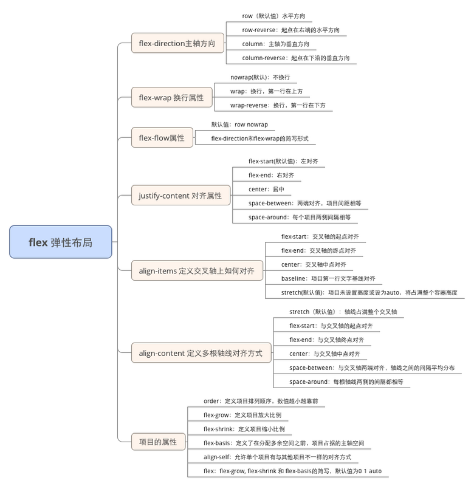

CSS常用布局
1.两栏布局
一栏定宽，一栏自适应。
实现方式有两种：
float+marginposition：absolute2.三栏布局
两边定宽，然后中间的width是auto的，可以自适应内容，再加上margin边距来进行设定。有四种实现方式
- 左右两栏
float，中间栏使用margin进行撑开，注意，当页面宽度小于两边宽度之和时，右侧栏会被挤下去，造成HTML的结构不正确。 position实现，左右两栏使用position进行定位，中间栏使用margin进行定位。缺点是父元素有内外边距时，会导致中间栏的位置出现偏差。- 使用
float和bfc配合圣杯布局。将middle的宽度设置为100%，然后将其float设置为left，其中的main块设置margin属性，然后左边栏设置float为left，之后设置margin为-100%，右栏也设置为float：left，之后margin-left为自身大小。缺点就是结构不正确，多了一层标签。 - flex布局。兼容性。
3.水平居中
margin：0 auto；text-align和inline-block的结合（父元素的text-align为center）position绝对定位来实现居中布局，适用于块级元素不给出宽高的情况下（需要借助transform的translateX方法）。#parent {
position: relative;
}
#child {
position: absolute;
top: 0;
left: 50%;
transform: translateX(-50%);
}flex#parent {
display: flex;
justify-content: center;
}4.水平居中及垂直居中
- 子元素 div 绝对定位，父元素需要被定位，子元素 top、bottom、left、right 四个位置值均为 0，子元素
margin: auto; position绝对定位及负外边距
flex布局

- Flex 布局，可以简便、完整、响应式地实现各种页面布局。Flex 是 Flexible Box 的缩写，意为”弹性布局”，用来为盒状模型提供最大的灵活性。flex只支持IE 10+。

- flex布局，子元素的
float、clear和vertical-align属性失效。

flex元素中，有两根轴，主轴
main axis（默认水平，方向向右），交叉轴cross axis（位置是主轴顺时针旋转90°），主轴开始的位置为main start，主轴结束的位置为main end。交叉轴同理。
flex的子元素中，占据主轴的空间为main size，占据的交叉轴为cross size。父容器属性
flex-direction：主轴的方向（row，row-reverse，column，column-reverse）flex-wrap：超出父容器自容器的排列样式（nowrap，wrap，wrap-reverse）flex-flow：前两者的简写形式justify-content：子容器在主轴的排列方向（flex-start，flex-end，center，space-between，space-around）align-items：子容器在交叉轴的排列方向（flex-start，flex-end，center，baseline，stretch）align-content：多根轴线的对齐方式（flex-start，flex-end，center，space-between，space-around，stretch）
- 子容器属性
order：子容器的排列顺序(数值越小，排列越靠前，默认为0)flex-grow：子容器剩余空间的拉伸比例(按比例给子容器分配空间)flex-shrink：子容器超出空间的压缩比例(此属性要生效，父容器的flex-wrap要设置为nowrap)flex-basis：子容器在不伸缩情况下的原始尺寸flex：flex-grow、flex-shrink、flex-basis的简写(默认为0 1 auto)align-self：允许子容器单个项目与其他项目不一样的对齐方式，可覆盖父容器属性，默认auto，表示继承父容器align-items，如果没有父元素，等同于stretch